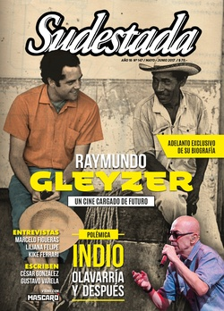

Buscar
Las olvidadas. "Ni una menos" en las cárceles
El movimiento de mujeres hizo temblar la tierra, pero hay lugares donde todavía no llegó con fuerza. El patriarcado se concentra en el penal femenino de Ezeiza y en otras cárceles de nuestro país. El adentro es una concentración del afuera. Algunas mueren en situaciones dudosas y otras son víctimas de violencia física, psicológica y obstétrica. Les pesa la doble condena moral de estar presas y de ser mujeres. Sus familiares y las organizaciones sociales dicen “Ni una menos en las cárceles también”.
Edición N° 147
Mayo-Junio 2017
Revista bimensual
Comprar edición impresaSumario
- Raymundo Gleyzer. Un cine cargado de futuro
- Cuando el poder se pone la gorra
- Indio, Olavarría y después
- Colombia. Las FARC desde adentro
- Zapatismo. Que retiemble en sus centros la Tierra
- Marcelo Figueras: "Walsh era la respuesta a todos mis dilemas"
- Liliana Felipe: "El mundo está controlado por la industria alimentaria"
- Kike Ferrari: "Escribimos las historias que nos impactaron cuando éramos pibes"
- Homero, el adelantado
- El aliento del racismo
- Las olvidadas. "Ni una menos" en las cárceles
Compartir Articulo
Alfredo Cuellar suele sentarse en los bancos de la placita que está a pasos de la estación Hospitales del subte H. Le queda a pocas cuadras de su casa, en Parque Patricios. A veces lleva a jugar a una de sus nietas aunque no haya calesita, ni hamacas, ni sube y baja. Es una excusa para contemplar el mural que pintó con ayuda de otros. Antes del 5 de marzo, ese espacio no tenía valor para él, había sólo grafitis viejos y descascarados. Ahora la pared devuelve la imagen de su hija Florencia, asesinada en la cárcel de Ezeiza en 2012. Alfredo está orgulloso de ver cómo las personas que pasan se sacan fotos con ella o simplemente se detienen a mirarla.
A Florencia le decían la China por el aspecto de sus ojos. Cayó presa en 2007. Fue acusada de participar de un robo en banda, después de involucrarse en una pelea en el Día de la Primavera. Había otras quince personas implicadas, pero la policía sólo se la llevó a ella. Tenía 19 cuando la condenaron a seis años de prisión. Cumplió dos en la cárcel de menores, que funcionaba también dentro de Ezeiza, y a los 21 la trasladaron al Complejo Penitenciario Federal iv. Su papá la iba a visitar seguido. Durante los primeros meses, la China le dijo que las presas antiguas eran el brazo ejecutor del Servicio Penitenciario Federal, que amedrentaban a las más jóvenes para quebrarlas física y psicológicamente. Querían sacarles lo rebelde.
Al Complejo Penitenciario Federal iv –ex Unidad 3– lo habilitaron en 1978. Está en funcionamiento desde entonces y se lo considera de máxima seguridad. Más allá de los anexos que fueron construidos en los últimos años, nunca se hicieron transformaciones edilicias, ni reparaciones importantes. La Procuración Penitenciaria de la Nación –ente estatal que se encarga de hacer relevamientos en contextos de encierro– aseguró en su informe de 2015 que las distintas autoridades del SPF incrementaron el cupo de alojamiento con el tiempo. No hicieron declaraciones transparentes acerca de la capacidad máxima. Como tantos otros penales del país, los pabellones tienen humedad en las paredes y las reclusas conviven con cucarachas y ratas por la falta de limpieza.
Ninguna quería ir a parar a esa parte de la cárcel. Pero adentro, la China no tuvo miedo ni siquiera el primer día. "Mi hija conocía cuáles eran sus derechos y se hizo respetar. Armó un grupo con otras pibas para hacerles frente a los maltratos. Al poco tiempo las presas viejas fueron trasladadas, pero se ganó otros enemigos. Las torturas las empezaron a efectuar los mismos penitenciarios", recordó Alfredo, consultado por Sudestada.
Florencia le contó a su papá cómo las trataban. Las penitenciarias las mojaban con agua fría de noche mientras dormían. En invierno o en verano. En las requisas era habitual que tuvieran que sacarse la ropa y mostrar sus partes íntimas. Las sacaban de los pabellones, les pegaban con las cachiporras. Por cualquier reclamo iban a parar a los "tubos", unas celdas de castigo de pocos metros cuadrados. A las más insumisas las llevaban al neuropsiquiátrico del penal y las inyectaban con psicofármacos para que hicieran "la plancha": dormían durante horas o días en contra de su voluntad.
"En estos últimos años registramos varios casos. Se le llama 'dispositivo psiquiátrico' y se produce como una solución a las protestas. Las mujeres son tildadas de locas y medicadas de manera coactiva. Además, entre un 50 y 60 por ciento de la población de ese complejo consume pastillas antidepresivas diariamente con consentimiento y prescripción de un psiquiatra", explicó a Sudestada Jimena Andersen, investigadora del Grupo de Estudios sobre Sistema Penal y Derechos Humanos (Gespydh).
Hacía cuatro años que la China cumplía su condena. Un 24 de diciembre el teléfono sonó a las tres de la mañana en la casa de los Cuellar. Alfredo se levantó rápido para atender el llamado que provenía de la cárcel. Le dijeron que su hija se había ahorcado porque estaba deprimida. Pero ni él, ni nadie, se lo creyó. Desde 2009, ocho chicas del grupito de ella murieron en situaciones similares después de haber sido amenazadas por el personal de la cárcel. "Pa, tengo que tener ojos hasta en la espalda. En cualquier momento me van a matar. Pero no voy a dejar que me trasladen. No quiero que piensen que arrugué. Yo no soy ninguna cagona", le había dicho en una de las últimas visitas...
Foto de Adriana Lestido
(La nota completa en la edición gráfica de Sudestada... ¿Por qué publicamos apenas un fragmento de cada artículo? Porque la subsistencia de Sudestada depende en un 100 por ciento de la venta y de la confianza con sus lectores, no recibimos subsidios ni pauta alguna, de modo quela venta directa garantiza que nuestra publicación siga en las calles. Gracias por comprender)
Comentarios
Agustina Lanza
Articulos más vistos


LIBRERÍA SUDESTADA

Colección infantil

Distribuidora de Libros

Suscripción

Sudestada en URUGUAY

Otros articulos de esta edición
Raymundo Gleyzer. Un cine cargado de futuro
El cine político argentino está marcado por la obra de Raymundo Gleyzer. Sus largometrajes disruptivos, sus cortos vinculados a la ...
Marcelo Figueras: "Walsh era la respuesta a todos mis dilemas"
En su última novela, El negro corazón del crimen, se propone narrar los inicios de un Rodolfo Walsh diferente, en ...
Cuando el poder se pone la gorra
Las imágenes que recorren el país no pueden ser más gráficas. Agentes antidisturbios cada vez más pertrechados, atiborrados de moderno ...
Liliana Felipe: "El mundo está controlado por la industria alimentaria"
La compositora, cantante y pianista cordobesa expande su universo de creaciones feministas y por los derechos de las minorías sexuales ...
Indio, Olavarría y después
Un recital que convoca multitudes. Un músico que camina sobre el filo del mito. Un concierto que puede ser el ...
El aliento del racismo
Casi siempre se les niega el alma a los afroamericanos en el cine occidental. El cine africano es para otro ...